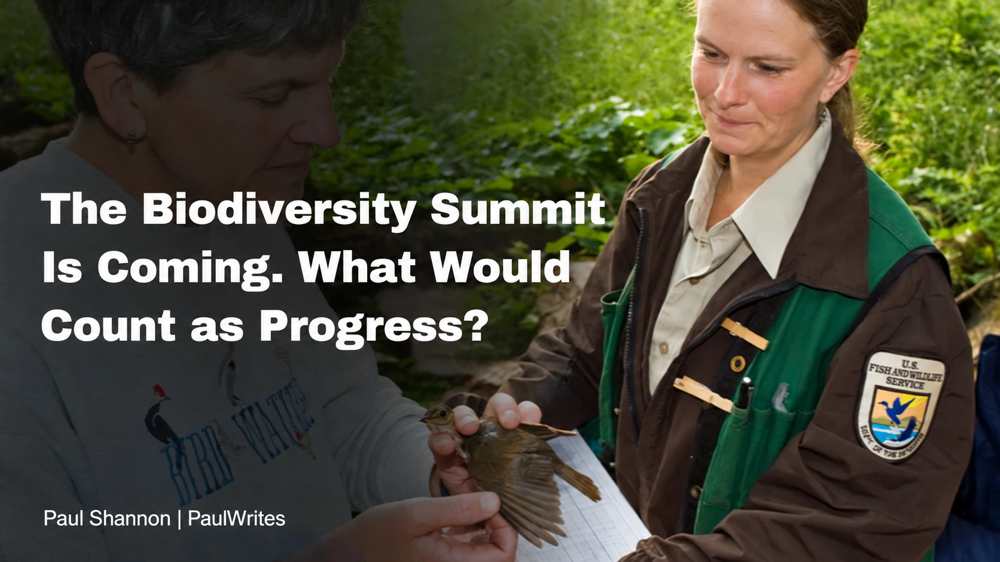
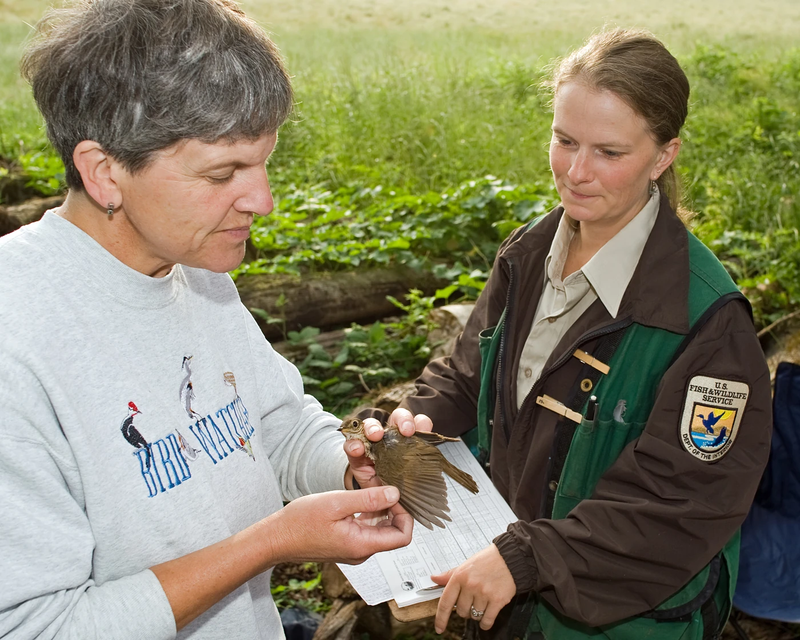
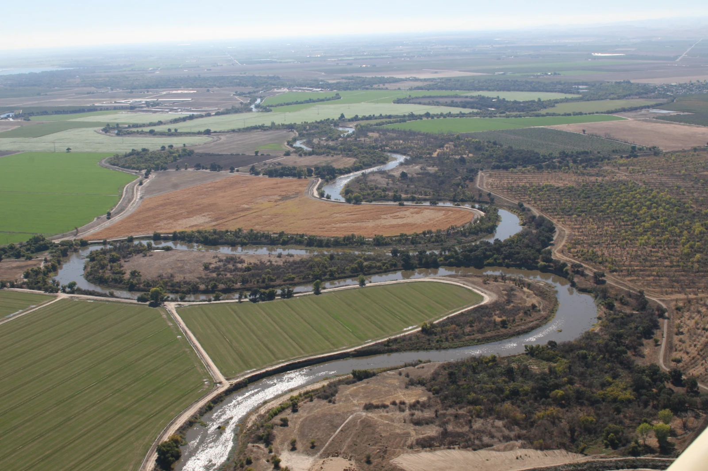

Full article · PaulWrites
The Biodiversity Summit Is Coming. What Would Count as Progress?
A research-led guide to evaluating COP17 through effective conservation, restoration monitoring, and biodiversity finance that reaches implementation.

Draw a boundary around a wetland and you can count every hectare inside it. Understanding whether it remains a good place for wildlife takes more work.
You need to know what happens to its water, which habitats persist, and whether someone has the resources and authority to manage it. A larger protected area can be a meaningful achievement. Its size cannot tell the whole story of its condition.
That distinction is worth keeping in mind as governments prepare for the UN biodiversity conference in Yerevan, Armenia, from October 19 to 30. COP17 will hold the first global review of collective progress in implementing the Kunming–Montreal Global Biodiversity Framework, adopted in 2022.
The framework's targets run to 2030. This review gives governments an opportunity to examine how their commitments are turning into action while there is still time to change course.
I would read the announcements coming out of Yerevan with a few specific questions in mind. They begin with what we are trying to count.
A national plan and an ecological outcome are different kinds of progress
A country can submit a biodiversity strategy, set national targets, fund implementation, and eventually observe changes in ecosystems. Each step matters. They happen at different points in the work.
The Convention on Biological Diversity's explanation of its first draft global progress report, published in June, describes an evidence base drawing on national reports, strategies, targets, scientific assessments, and other knowledge. That gives the review a broader foundation than speeches alone.
It still requires care in interpretation. The presence of a national target shows that a commitment has been articulated. Assessing its implementation asks what has been done. Measuring an ecological outcome asks what changed in the living system. One cannot automatically stand in for another.
The Secretariat's August account of the preparatory meetings in Nairobi makes that tension clear. It describes substantial participation while reporting that fewer than half of the aligned national targets assessed by Parties were on track. That figure concerns assessed national targets, not the share of the framework's 23 global targets achieved.
My concern would be a review that recognizes this gap but leaves the practical response vague. Identifying why implementation is lagging should make the next decision more specific: who needs to do what, with which resources, and how progress will be checked.

Thirty percent needs more than a boundary
The best-known commitment is often shortened to “30 by 30.” Target 3 calls for conserving at least 30% of terrestrial and inland-water areas, and coastal and marine areas, by 2030.
The rest of the target matters. It specifies effective conservation and management, ecological representation, connectivity, equitable governance, and respect for Indigenous peoples' and local communities' rights.
Those conditions make it difficult to judge success by area alone. Two systems covering the same proportion of a country could protect very different habitats and have very different abilities to sustain wildlife. A collection of disconnected sites also raises different questions from a system that supports movement between habitats.
For a freshwater example, imagine a protected lake whose tributaries run through an intensively used landscape. Its legal boundary tells us something important. It leaves us needing to examine the pressures arriving from the wider catchment and whether management can address them.
That is an illustrative example, not a finding about a particular lake. It shows why I would want a conservation announcement to explain which ecological problem the new protection is expected to solve.
At COP17, an increase in protected coverage deserves attention. So does evidence about management quality and whether the people living with a conservation decision have a meaningful role in it.

Restoration needs a way to follow what happens afterward
Target 2 calls for at least 30% of degraded ecosystems to be under effective restoration by 2030. That wording is important: “under restoration” is different from claiming that every ecosystem will be fully recovered by then.
The Secretariat's guidance recognizes that restoration is a long-term process. Effective activities need resources and monitoring over time. The ability to restore a place later also should not become a justification for degrading it now.
For a hypothetical wetland project, an initial intervention might reopen water connections or remove a barrier. The evaluation would need to follow whether the intended conditions develop and persist. Which measures are useful depends on the project's goals: water levels, vegetation, habitat use, or another defined response.
Photographs from the first day cannot do all of that work. Neither can the number of projects started, although it is useful to know that work has begun.
The reporting I would look for separates the intervention from its expected trajectory. It explains what recovery should look like, what has been measured so far, and what will happen if the site does not respond as intended.
That makes room for slow ecological recovery without giving every unsuccessful project an indefinite excuse.
A funding pledge needs a route to the work
The framework also makes finance part of implementation. Target 19 seeks at least $200 billion annually from all sources by 2030. Within that broader goal, it includes international financial flows to developing countries of at least $20 billion per year by 2025 and $30 billion by 2030.
These are target amounts, not evidence that the money has arrived. The $30 billion international component also should not be added to the $200 billion as if it were a separate total.
A new funding announcement would therefore leave me wanting to follow the money further. Is it a new commitment or a restatement of an existing one? When will it be disbursed? Can the intended recipients access it? What ongoing work will it support?
A conservation project can need repeated surveys, trained staff, equipment maintenance, and engagement with people using the surrounding landscape. Those costs continue after a launch event. A useful financing story should explain how the work remains possible over time.
I would also want to know whether better conservation funding is being undermined by decisions elsewhere. Target 18 addresses incentives, including subsidies harmful to biodiversity. Funding conservation while continuing to reward damaging practices would give the review two sides of the same policy problem to examine.
Leave the summit with something we can follow
I would be encouraged by an outcome that makes implementation easier to examine six months or a year later. A named action, an accessible funding route, and a defined way to assess results give the public something to return to.
Ecological outcomes can take time. That makes intermediate evidence important: whether the promised work began, whether it addressed the identified pressure, and whether monitoring is capable of detecting the intended response.
For people reading from outside the negotiating rooms, those details are a way into an otherwise sprawling conference. We can follow a decision through to a particular landscape and ask what became possible because of it.
The wetland's boundary is worth recording. So is whether the water regime improves, whether the habitat is maintained, and whether the people responsible can continue the work. COP17's review becomes valuable when it helps connect the international commitment to that next practical step.
About this project
See the assignment, process, and my contribution.
I developed the editorial angle, researched the CBD’s primary sources, and wrote the full article. This PaulWrites web edition preserves the completed article text and source links, with credited public-domain photographs.